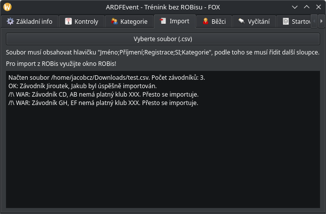

Tutoriál¶
Autor sekce: Jakub Jiroutek <jiroutekja@seznam.cz>
Tady najdete přesný průvodce organizací okresního přeboru v JJ ARDFEventu.
Založení závodu¶
Po spuštění JJ ARDFEventu se vám zobrazí takovéto okno:

v něm vyberte Nový závod a v dialogu zadejte ID závodu bez mezer a zvláštních znaků (jmenuje se tak soubor) - např. kp1608.
Vyskočí vám hlavní okno:
{kind=link}
Nastavení závodu s ROBisem¶
V kartě Základní info nemusíte vyplňovat nic, přejděte rovnou do záložky ROBis.
Upozornění
Před stahováním si ověřte, že je vše co se stahuje (název závodu, pásmo, limit, pořadatel a čas statu 00 nastavený u etapy v ROBisu), jinak se to JJ ARDFEventu nebude líbit a bude házet errory
V okně ROBis vyplňte všechny požadované údaje a uložte je tlačítkem OK.

Rada
Jak najít požadované údaje v ROBisu
API klíč: najdete u příslušné etapy
ID soutěže: (z URL v prohlížeči při otevřeném závodě)
https://rob-is.cz/soutez/39/?race=484&tab=results=> ID soutěže je 39 (484 je ID etapy, JJ ARDFEvent toto číslo nezajímá)Číslo etapy: E2 => číslo etapy je 2
Pro stažení nastavení závodu, přihlášek a kategorií klikněte na Stáhnout přihlášky, kategorie.
Výstraha
Import z ROBisu samozřejmě funguje jen tehdy, když jste připojeni k interetu. Když je připojení pomalé, JJ ARDFEvent na chvíli zamrzne.
V dolním logu se zobrazí, které kategorie byly vytvořeny a Import OK:
{kind=link}
S uložením API klíče se automaticky budou nahrávat živé výsledky na ROBis při vyčítání.
Nastavení závodu bez ROBisu¶
Pokud závod nezadáváte do ROBisu, můžete si ho nastavit ručně.
V kartě Základní info vyplňte všechny údaje a uložte je tlačítkem OK.
Jak přidat kategorie se dozvíte v Manuální přidání kategorií.
CSV import přihlášek¶
CSV import proběhne po vybrání souboru v kartě Import.
Příklad souboru pro import:

Upozornění
Z Excelu/LO exportujte jako CSV s rozdělovníkem ;.
Zde příklad logu po naimportování souboru výše:
{kind=link}
Poznámka
Klub XXX není v AROB ČR validní, tudíž hází upozornění.
Nastavení kontrol¶
Kontroly se nastavují v kartě Kontroly:

Buď můžete kontroly přidat ručně kliknutím na Přidat, nebo zvolit přednastavené sady kontrol.
Upozornění
Nezapomeňte kliknout vždy před odchodem z karty na Uložit!
Vlastnosti kontrol¶
Jméno kontroly¶
Kontrola může mít jákekoliv alfanumerické jméno, pro přehlednost vyčítacího lístku doporučuji
ale maximálně 4 znaky (např. 1, R2, 5F, 4/R4, M nebo S)
SI kód¶
Jakékoliv číslo v \(\langle31; 255\rangle\), samozřejmě stejné číslo jako nastavujete v SI Config+
Příznaky kontroly¶
Kontrola může být nastavena jako (vzájemně se nevylučují):
Povinná- musí být vyčtena, jinak je závodník diskvalifikovánDivácká- kontrola odděluje okruhy - např. pomalé a rychlé
Rada
S nastavujte jako povinnou, příznak Divácká je zatím nefunkční a nic nemění
Spojování kontrol¶
V případě, že má více kontrol jednu SI jednotku, je nemožné aby existovaly obě dvě v JJ ARDFEventu.
Jednoduše vytvořte jednu kontrolu a pojmenujte ji např. 5/R5. Jak to udělat tak, aby nebylo spojení vidět i na startovce najdete v sekci Kategorie + tratě
Přednastavené sady kontrol¶
Sady jsou:
Pomalé kontroly: 1, 2, 3, 4, 5, M - povinnáVšechny kontroly: 1, 2, 3, 4, 5, R1, R2, R3, R4, R5, M - povinnáVšechny kontroly: 1, 2, 3, 4, 5, S - povinná + divácká, R1, R2, R3, R4, R5, M - povinná
Kategorie + tratě¶
Kategorie a tratě se nastavují v kartě Kategorie.
Jestliže jste stahovali závod z ROBisu, kategorie budou již naimportované.
{kind=link}
Manuální přidání kategorií¶
Novou kategorii vytvoříte tím, že do dialogu po kliknutí na Nová kategorie zadáte název:
{kind=link}
Definování tratě¶
Kontroly (v levém sloupečku) do tratě (v pravém sloupečku) přidáváte dvojklikem v pořadí, v jakém je chcete zobrazovat na výsledcích. V případě překliku nebo změny tratí se kontrola odebírá dvojklikem v pravém sloupečku.

Kontroly zobrazované před závodem¶
Jestliže máte spojené kontroly (např. 4/R4, viz Spojování kontrol), jako na obrázku výše,
nechcete aby závodníci ze startovky poznali, že je kontrola spojená. Kontroly zobrazované ve startovce
se dají nastavit v poli Před závodem zobrazované kontroly v kartě Kategorie (pole se
samo nastavuje při přidání kontroly). Ve výše uvedeném případě by jste 1, 2, 4/R4, M přepsali na
1, 2, 4, M a závodníci by tak nepoznali, že je kontrola spojená. Toto musíte provést u každé kategorie.
Startovka¶
Startovku spravujete v kartě Startovka.
Nachází se tam řaditelná tabulka (např. kliknutím na nadpis sloupce Kategorie, seřadíte podle kategorie, funguje pro všechny sloupce)

Tip
Jestli chcete startovat na krabičku, startovku nelosujte.
Varování
Když je vylosovaná startovka a závodník má čas startu v čipu, počítá se čas z čipu.
Losování startovky¶

V okně losování startovky nastavte startovní interval a časy startu 00 pro každou kategorii a stiskněte Losovat!
Startovka se automaticky vylosuje s co největším rozestupem klubů v kategorii.
Export startovky do O Checklist¶
Startovka pro O Checklist se exportuje v kartě Startovka.
V menu Exportovat vyberte IOF XML 3.0 a přeneste vyexportovaný soubor do telefonu nebo tabletu. Dále postupujte podle návodu autora
Export startovky pro ROBis¶
Startovka pro ROBis se exportuje v kartě Startovka.
V menu Exportovat vyberte CSV pro ROBis. Jak ho nahrát do ROBisu v oficiální nápovědě ROBisu
Vyčítání¶
Rada
Pro vyčítání na Windows je zapotřebí USB ovladač pro SI.
V kartě Vyčítání zvolte port SI a tiskárny (nebo Netisknout) a v případě tisku na šňůru zvolte Dvojtisk.
Po aktivaci vyčítání se zobrazí okno stavu vyčítání:
{kind=link}
Tisk lístků pro závodníky¶
V případě zvoleného portu tiskárny se po vyčtení závodníka vytiskne lístek.
V případě zvolení Dvojtisk se vytisknou dva lístky, jeden pro závodníka a druhý na šňůru (po tisku prvního lístku se zobrazí okno a po potvrzení se vytiskne druhý). Lístek na šnůru neobsahuje zbytečné informace a má na začátku místo pro připnutí na šňuru.
{kind=link}
Nalevo lístek na šňůru, napravo pro závodníka.
Případné chybové stavy¶
Při jakékoliv chybě se přehraje následující zvuk a ve vyčítacím dialogu jeden z následujích stavů:
Stav |
Příčina |
Řešení |
|---|---|---|
CHYBA SI |
Chyba ve čtení čipu, nejčastěji brzo vytažený čip z jednotky. |
Vyčtěte znovu. |
NENALEZEN ČIP |
Čip není přiřazen závodníkovi v databázi. |
Vyplňte jméno závodníka do zobrazeného dialogu. |
CHECK ERROR |
Check proběhl více jak hodinu před startem. Je pravděpodobné, že je čip nevymazaný. |
Vyberte, jestli chcete čip vyčíst. [1] |
JIŽ VYČTENÝ ČIP |
Čip již byl vyčten. |
Vyberte, jestli chcete stávající data přepsat. |
Závodníci v lese¶
Seznam závodníků, kteří jsou v lese, se zobrazuje v kartě Závodníci v lese.
Závodníci se v tomto seznamu objeví po startu podle startovky a zmizí se po vyčtení čipu.
Import dat z O Checklist¶
Import dat z O Checklist se provádí v kartě Závodníci v lese.
Nejdříve je potřeba dostat soubor start_status.yaml z telefonu/tabletu do počítače (např. přes e-mail nebo FTP), poté v kartě Závodníci v lese klikněte na Import z O Checklist a vyberte soubor start_status.yaml (musí se tak jmenovat). Akce začne probíhat hned po vybrání souboru.
Průběh akce vidíte v logu.
Výsledky¶
Výsledky se zobrazují v kartě Výsledky.
Export výsledků¶
Export je možný do několika formátů tlačítkem Exportovat.
Formát |
Použití |
|---|---|
HTML / HTML s mezičasy |
Pro zveřejnění na webu, tisk nebo export přes prohlížeč do PDF. |
IOF XML 3.0 |
Pro nahrání výsledků do aplikací pro OB. |
ARDF JSON |
Pro nahrání výsledků do ROBisu. |
CSV |
Pro tisk diplomů a další zpracování ve Excelu/LO. |
Výsledkový server¶
Added in version 1.0.0: Přidán webový server.
Webový server se spustí v kartě Výsledky tlačítkem Spustit webový server.
Webový server najdete na adrese http://localhost:8080/ (pokud běží na stejném počítači) nebo http://<IP_ADRESA_SERVERU>:8080 (pokud běží na jiném počítači v síti).
Ve výběru vyberte zobrazované kategorie a klikněte na nastartovat:
{kind=link}
Tip
Více kategorií vyberete tak, že je vyberete s podrženým Ctrl nebo Shift.
Po nastartování se budou vybrané kategorie nekonečně střídat po časovém intervalu spočítaném podle počtu závodníků.

Hlášení¶
V webovém serveru je možné po vystřídání všech kategorií zobrazit hlášení (např. Odjezd autobusu v 12:10., Vyhlášení výsledků v 15:00 apod.). Hlášení se nastavuje tlačítkem Změna hlášení.
{kind=link}
Nahrání finálních výsledků do ROBisu¶
V kartě ROBis klikněte na Nahrát výsledky.
Slovníček cizích pojmů¶
Poznámky pod čarou